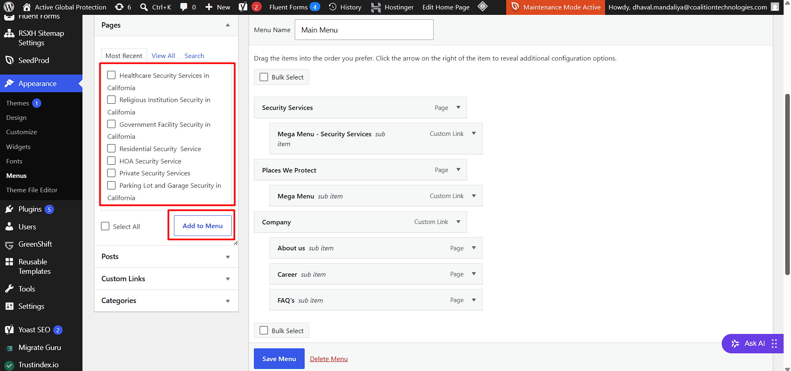
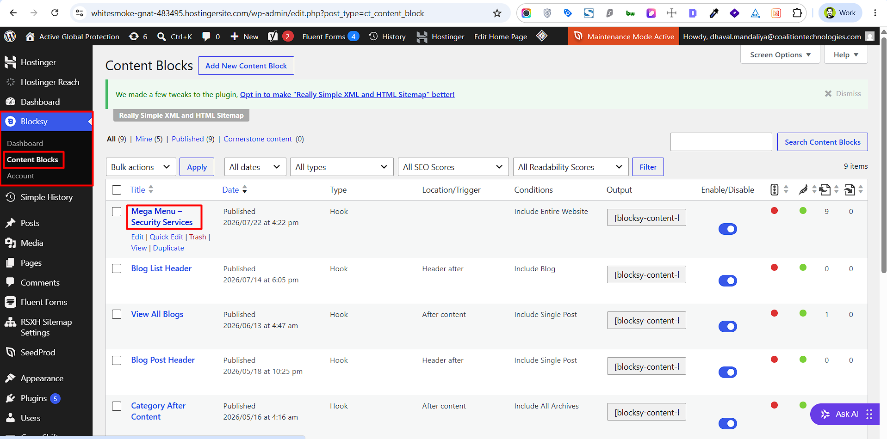
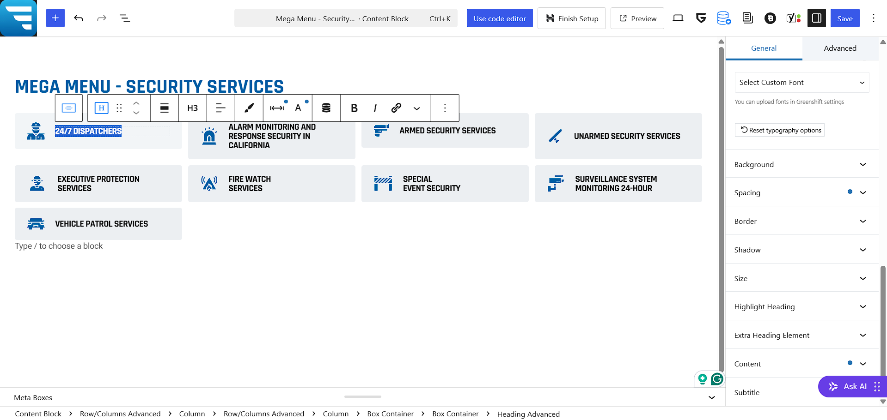
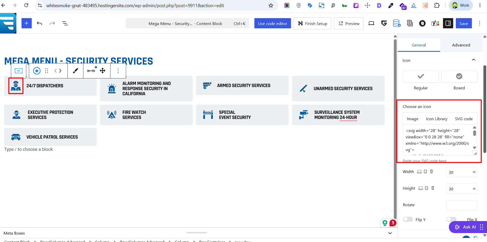
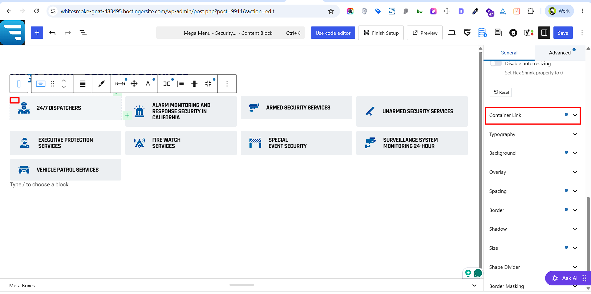
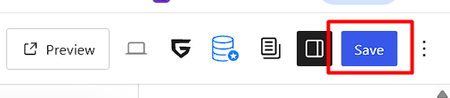
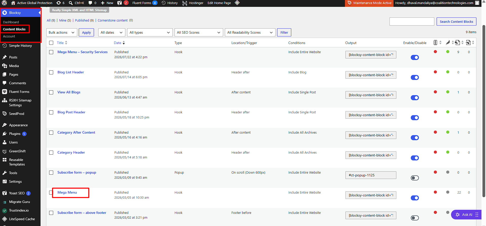

Menu
How to Update the 'Company' Menu
- Go to WP Admin → Appearance → Menus.
- From the left panel, select items to add (such as Pages, Custom Links, or Categories), and click Add to Menu.
- Drag and drop the menu items into your preferred hierarchical structure

How to Update the 'Security Services' Menu
- Go to WP Admin → Blocksy → Content Blocks → Edit/Click on the 'Mega Menu - Security Services' content block

- Edit nav title text:
- Click directly on any item's title (e.g., 24/7 Dispatchers, Armed Security Services) to update the text

- Click directly on any item's title (e.g., 24/7 Dispatchers, Armed Security Services) to update the text
- Edit nav item icon:
- Click on the Icon block
- Update Icon - In the right-hand sidebar under General → Icon, locate the Choose an icon section
- Paste custom 'svg' code directly into the Paste your SVG code here box.
- (Optional) Adjust the Width and Height settings below to resize the icon.

- Edit nav item links:
- Select the Box Container (the block wrapping the item - click on top left corner) in the List View.
- In the right-hand sidebar under General → Container Link
- Paste or type your target page URL into the link input field.
- Add a descriptive title (e.g., 24/7 Dispatchers) in the Title for SEO input field.

- Click Save Menu.

How to Update the 'Places We Protect' Menu
- Go to WP Admin → Blocksy → Content Blocks → Edit/Click on the 'Mega Menu' content block

- Now you can follow the same steps as 'Mega Menu - Security Services'